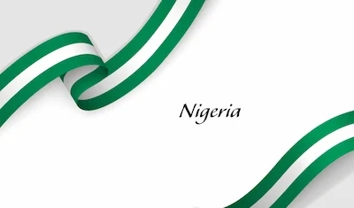

Nigeria
The Giant of Africa
About This Place
Nigeria sits on the Gulf of Guinea in West Africa, home to more than 200 ethnic groups and over 500 languages. Lagos, its largest city, is one of the fastest-growing urban centers on the continent — a restless mix of markets, music, and new ideas pressed against the Atlantic coast.
Weather
- Location
- Lagos, Nigeria
- Temperature
- 29°C
- Wind Speed
- 6 km/h
- Wind Chill
- Calculating…
Quick Facts
- CapitalAbuja
- Largest CityLagos
- Official LanguageEnglish
- CurrencyNaira (₦)